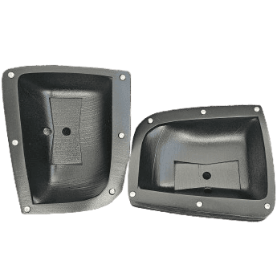
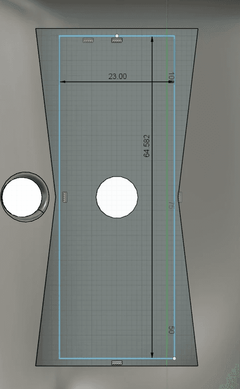
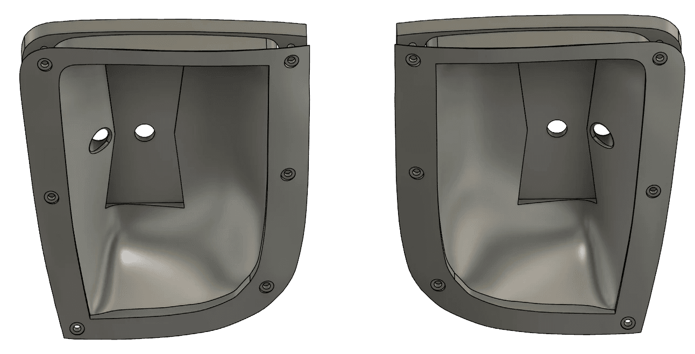
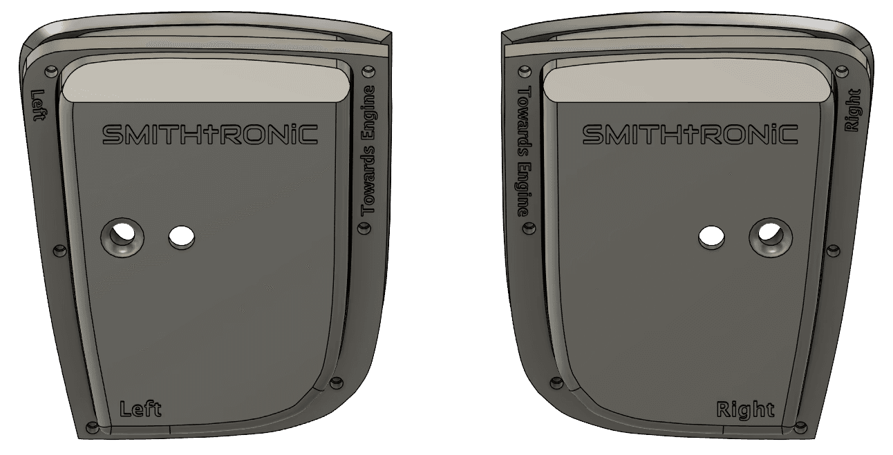

Subaru Forester Sports DIY Amber Auxiliary Light Kit
Customize your Forester's lights with a perfect fit.

Product Description:
A custom-designed DIY light kit that flush-mounts into the 2006–2008 Subaru Forester Sports bumper. It is the housings, retainers, and hardware only—you choose and supply the lights.
This and the assembled version share the same printed parts — the pages differ only in whether the lights are the ones I used or ones you choose. This is the page to read if you are picking your own light—the bracket spec below is what that light has to meet.
Vehicle Fitment:
2006 - 2008 Subaru Forester Sports (SG w/ Facelift)
Free — Open Source
Released under CC BY-NC-SA 4.0 — build it, remix it, share it with attribution; no commercial use.
Key Features:
Perfect Fit
Seamlessly integrates into the Sports bumper fog light holes.
Customizable
Accommodates a variety of lights that mount with a single bolt.
Adjustable Beam
Vertical and horizontal articulation to fine-tune your light's aim.
High-Quality Materials
ASA Plastic and Stainless Steel for durability and UV resistance.
What You Print:
- 2 ASA-Printed Housings
- 2 ASA-Printed Retainers with Brass Heat Inserts
Four parts total — the same files as the assembled version. Printing them takes about a day and a half of machine time — roughly 1 day 8 hours for the pair of housings and 2½ hours for the retainers, in ASA.
What You'll Need to Supply:
- The relay and switch are OEM Subaru parts — easily acquired through Subaru or other retailers.
- Fog Light Relay
- Part Number: 82501AE03A
- Fog Light Switch
- Part Number: 83001SA000
- The lights of your choice — check them against the compatibility spec below before you commit (See Specifications within the Installation Guide)
- Harness connector
- Info: 9005 Male End
- 12× brass M3 heat-set inserts and 12× M3×25 button-head bolts — the bill of materials names the exact ones I used (and a stainless alternative).
Light Compatibility:
This is the part worth checking before you print anything. The housing takes a wide range of small pods, but your light's bracket has to work with the articulation cutout:
- Single through-bolt mount — the bracket has to attach with one bolt passing through the center hole of the housing, secured with a nut behind it.
- Maximum bracket size: 64.5 mm tall × 23 mm wide — the largest bracket that still rotates through its full vertical travel without its corners catching the edge of the cutout.
- A bracket that is narrower but still at maximum height can still interfere, because a narrower bracket gets a wider range of rotation.
- 9005 male connector, two wires — that is what the factory harness plugs into. Most lights won't come with one, so expect to cut the light's own connector off and solder the 9005 end on; it also has to pass through the wire hole in the housing.

If nothing you like fits inside that envelope, the Fusion 360 source is published now — reshape the bracket pocket around your light instead of hunting for a light that suits mine.
Make It Yourself:
- Print settings — the production Bambu Studio projects, with the exact layer heights, orientation, and painted supports I used.
- Bill of materials — hardware, OEM part numbers, and the connectors and bolts that go into a set.
- Finishing guide — the sand, high-build primer, and satin black process that gave the parts their factory look.
- CAD source — the Fusion 360 file, so you can reshape the housing around a light that doesn't meet the bracket spec above.


FAQs:
Where do I get the files?
Everything printable is free on Thingiverse, and the full source — CAD, print settings, and documentation — lives on GitHub. Print a set yourself or have someone print it for you; apart from the off-the-shelf hardware, everything you need is in the files.
How long does a set take to print?
About a day and a half of machine time per set — roughly 1 day 8 hours for the pair of housings (they print at 0.08 mm, tilted 45°) and about 2½ hours for the pair of retainers.
How is this different from the assembled version?
For the printed parts, it isn't — they are the same files. The assembled version documents the amber LED pods I used, already wired and mounted; this page covers choosing your own light. Read this page if you are picking a light, and that one if you'd rather copy mine.
What lights will fit?
Anything that mounts with a single bolt through its bracket and stays within 64.5 mm tall by 23 mm wide at that bracket. Measure yours against the size diagram above — and keep in mind that a narrow bracket at full height can still catch the cutout as it rotates. The specifications in the installation guide have the full detail.
Will you do custom design work to make sure the light I choose will fit?
I used to offer that as a paid service, and I don't anymore. Instead, the Fusion 360 source file is published alongside the models, so you can reshape the housing around your own light yourself — or hand the file to someone who models. That covers what the service did, without waiting on me.
If you build something interesting with it, I'd like to see it.